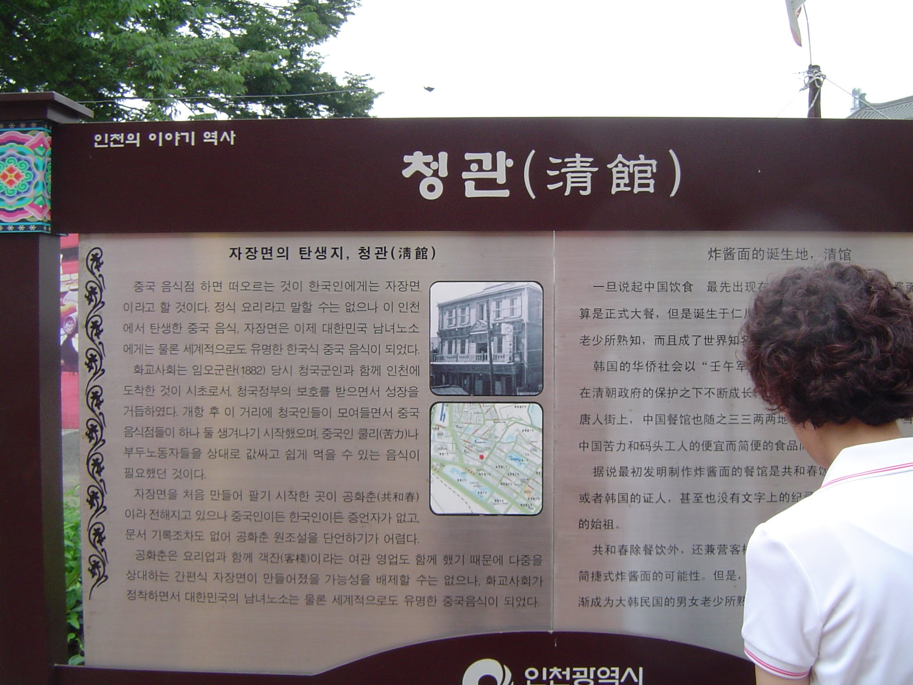

When families visit, especially older siblings, it is an internal audit.
We learn of their schedule and the scope of their visit, usually in advance.
Making sure the house is in order and remove any items that are not necessary for the audit.
We got the notice 3 weeks prior to their arrival.
They were supporting their daughter-in-law who is an ultra runner by taking care of their new born grandson.
(Their counterpart, in-laws live an half an hour away).
Whereas my sister traveled 2000 miles and crossed 2 time zones.
There’s saying that refers to summers, that my mom said often.
오뉴월(五六*月) 볕하루만 쬐도 낫다.1
Which is normally explained as,
during the lunar May and June (오뉴월 in 음력), even a single day of sunshine can make plants and animals grow rapidly.
It metaphorically expresses that even a short period of favorable conditions can bring about noticeable growth or improvement.
This can apply to various situations, such as learning, personal development, or recovery, where a small positive influence can have a significant impact.
But somehow I heard it a little differently and interpreted it as,
It is better to be born early, even by one day
I thought it was a bit of a stretch to think that a day can make a difference.
Growing up in 주안, near Incheon (인천), we saw older ladies dressed in a tight black outfit.
I had wondered back then, why were these foreigners in our neighborhood?
Later, I learned that the port of Incheon was a gateway for people coming from the ShanDong (山東) province during the 1920s and earlier.2
Then my sister explained, there was a restaurant run by a Chinese family in our neighborhood.
Even though it was small discovery, it helped me understand why I saw foreigners in 주안,
A blogger mentions that there is a restaurant run by the 5th generation, 화교.3

It used to be, by talking with my parents, my worries and concerns were diminished or went away altogether.
At times there are questions about life or life as explained by the religion.
It was refreshing to talk to my sister who was closer to my parents and witnessed their hard work and often worked side-by-side with them.
Thereby, she has a better understanding of their views of life and religion.
When I talked about current trends and practices, she brought me back to the beginning or the origin.
That place of the beginning as a immigrant family and a practioner of a new found religion.
For her, there is no need to venture or investigate topics and practices, she will rely on the faith of our father and mother.
Passed the audit with few observations and no findings.
Instead, learned or realized again the importance of remembering our past, specifically life’s lessons provided by our parents.
From another witness.
Being audited by someone that knows me from the beginning has its challenges and benefits.
She knows my shortcomings.
At times, she can and should be more direct, pointing our things that I should be doing better and fix those things I need to improve or in violation of.
But as my parents were, she is kinder and gentler.
I did sense, without admonshment, that I needed to learn and be more like my parents, in terms of faith and action being congruent.
Like my siblings I need to arrive at the measure and stature of hard working, strong faith yet be a gentle people who overcame the challenges of this life.
“Till we all come in the unity of the faith, and of the knowledge of the Son of God, unto a perfect man, unto the measure of the stature of the fulness of Christ.”
Ephesians 4:13
Appendix 1
오뉴월(五六*月) 볕하루만 쬐도 낫다
음력 오뉴월(五六*月)에는 하룻볕이라도 쬐면 동식물이 부쩍부쩍 자라게 된다는 뜻으로, 짧은 동안에 자라는 정도가 아주 뚜렷함을 비유적으로 이르는 말.
during the lunar May and June (오뉴월 in 음력), even a single day of sunshine can make plants and animals grow rapidly.
It metaphorically expresses that even a short period of favorable conditions can bring about noticeable growth or improvement.
This can apply to various situations, such as learning, personal development, or recovery, where a small positive influence can have a significant impact.
Appendix 2
There are several types of audits, each serving different purposes depending on the industry, compliance requirements, and organizational goals. Here’s a breakdown of the main types of audits:
1️⃣ Financial Audit
📌 Purpose: Ensures the accuracy and fairness of financial statements.
📌 Conducted by: External auditors (e.g., CPA firms) or internal auditors.
📌 Example: A company undergoes an annual audit by an external accounting firm to comply with regulations.
2️⃣ Internal Audit
📌 Purpose: Evaluates internal controls, risk management, and operational efficiency.
📌 Conducted by: Internal auditors employed by the organization.
📌 Example: A company’s internal audit team reviews payroll processes to detect errors or fraud.
3️⃣ Compliance Audit
📌 Purpose: Ensures adherence to laws, regulations, and industry standards.
📌 Conducted by: Government agencies, regulatory bodies, or independent auditors.
📌 Example: A hospital is audited for HIPAA compliance to ensure patient data security.
4️⃣ Tax Audit
📌 Purpose: Verifies the accuracy of tax filings and compliance with tax laws.
📌 Conducted by: Tax authorities (e.g., IRS, state tax agencies).
📌 Example: The IRS audits a business to check for proper tax deductions and income reporting.
5️⃣ Operational Audit
📌 Purpose: Assesses operational efficiency and effectiveness.
📌 Conducted by: Internal or external auditors.
📌 Example: A manufacturing company undergoes an operational audit to optimize its production process and reduce waste.
6️⃣ IT (Information Systems) Audit
📌 Purpose: Evaluates cybersecurity, data protection, and IT system controls.
📌 Conducted by: IT auditors, cybersecurity specialists, or external consultants.
📌 Example: A bank undergoes an IT audit to ensure customer data is secure from cyber threats.
7️⃣ Forensic Audit
📌 Purpose: Investigates fraud, financial crimes, or misconduct.
📌 Conducted by: Forensic accountants and fraud examiners.
📌 Example: A forensic audit is conducted in a company to uncover embezzlement.
8️⃣ Performance Audit
📌 Purpose: Assesses whether programs or projects are achieving their intended goals efficiently.
📌 Conducted by: Government agencies or internal auditors.
📌 Example: A government agency conducts a performance audit to evaluate the effectiveness of a public health initiative.
9️⃣ Environmental Audit
📌 Purpose: Examines compliance with environmental laws and sustainability practices.
📌 Conducted by: Environmental consultants or regulatory agencies.
📌 Example: A factory is audited to ensure it meets pollution control standards.
🔟 Supplier (Vendor) Audit
📌 Purpose: Evaluates a supplier’s quality, compliance, and ethical standards.
📌 Conducted by: A company that purchases goods/services from suppliers.
📌 Example: A clothing brand audits its suppliers to ensure fair labor practices.
Footnotes
https://wordrow.kr/%EC%86%8D%EB%8B%B4/%EC%98%A4%EB%89%B4%EC%9B%94%EB%B3%95%ED%95%98%EB%A3%A8%EB%A7%8C%EB%8D%94%EC%AC%90%EB%8F%84%EB%82%AB%EB%8B%A4-%EC%9D%8C%EB%A0%A5%EC%98%A4%EB%89%B4%EC%9B%94%EC%97%90%EB%8A%94%ED%95%98%EB%A3%BB%EB%B3%95%EC%9D%B4%EB%9D%BC%EB%8F%84%EC%AC%90%EB%A9%B4%EB%8F%99%EC%8B%9D%EB%AC%BC%EC%9D%B4%EB%B6%80%EC%A9%8D%EB%B6%80%EC%A9%8D%EC%9E%90%EB%9D%BC%EA%B2%8C%EB%90%9C%EB%8B%A4%EB%8A%94%EB%9C%BB%EC%9C%BC%EB%A1%9C,%EC%A7%A7%EC%9D%80%EB%8F%99%EC%95%88%EC%97%90%EC%9E%90%EB%9D%BC%EB%8A%94%EC%A0%95%EB%8F%84%EA%B0%80%EC%95%84%EC%A3%BC%EB%9A%9C%EB%A0%B7%ED%95%A8%EC%9D%84%EB%B9%84%EC%9C%A0%EC%A0%81%EC%9C%BC%EB%A1%9C%EC%9D%B4%EB%A5%B4%EB%8A%94%EB%A7%90./↩︎
https://efw.nfm.go.kr/service/book/text/82?groupId=1&refer_id=58#:~:text=%EC%9D%B8%EC%B2%9C%20%ED%99%94%EA%B5%90%EB%93%A4%EC%9D%98%20%EB%8C%80%EB%8B%A4%EC%88%98%EB%8A%94,%EB%A1%9C%20%EC%9D%B8%EC%A0%95%ED%96%88%EA%B8%B0%20%EB%95%8C%EB%AC%B8%EC%9D%B4%EB%8B%A4.↩︎